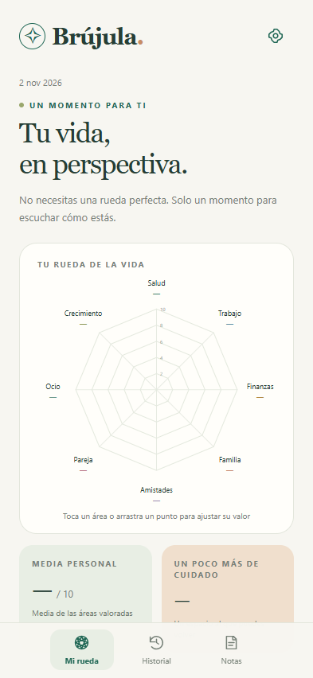

Start with a blank page
No sample scores, personal notes or saved evaluations. Your first check-in begins with you.
A MOMENT FOR YOURSELF
Eight areas. A little room to reflect.
Find your own direction with Brújula, a private wheel of life for Android.
No account. No ads. No Internet needed in the app.

LESS NOISE. MORE PERSPECTIVE.
Just an honest moment with yourself. Rate each area, add the story behind the number, and notice what changes over time.
No sample scores, personal notes or saved evaluations. Your first check-in begins with you.
Explore an interactive wheel, write notes for each area, and compare your saved moments in the history.
Choose an optional daily, weekly or monthly reminder. Pick a time, or switch it off whenever you like.
A SMALL FIRST STEP
Install Brújula directly on your Android phone.
Use the download button on this page. It follows the latest published release.
Open the file from Downloads or Files. If Android asks, allow installation from that source.
Choose Install or Update. Keep your existing app installed to preserve your notes and history.
READY WHEN YOU ARE
The download always points to the latest stable release on GitHub.
On your phone. The Android app works offline, with no account, server or analytics. You can export a local JSON backup from Settings. Back up your reflections before uninstalling or changing phones.
Install the new release over your existing app, without uninstalling it. Your reflections and history are preserved. To start fresh instead, use Settings → Clear data and start fresh and confirm.
They are off by default. In Settings → Reflection reminder, choose a daily, weekly or monthly schedule and a local time. Android will ask for notification permission when needed. You can disable the reminder and save at any time. Battery management may delay delivery.
The download points to the latest stable GitHub release. Version information is read directly from GitHub when available. New versions appear here when a new release is published; this page does not update the app on your phone automatically.